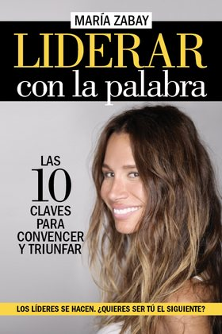

La pasión
Cuando lo que sentimos altera el orden de todo lo demás.
Historias de amor, humor y desencanto. Tan imprevisibles como la vida.
Entre lo que imaginamos y lo que vivimos caben muchas historias.
María Zabay se acerca a las relaciones desde sus contradicciones: la ilusión del principio, las expectativas, las decepciones y la capacidad de volver a sentir. Un recorrido por experiencias reconocibles, contadas con humor y una mirada que invita a pensar.
«Es un libro muy divertido, pero que nos lleva a pensar y a sacar conclusiones».
María Zabay · Entrevista, 2012Esta historia llegó a los lectores con el título ¿Y ahora… dónde tendemos las braguitas rosas?. La autora explicaba aquellas «braguitas rosas» como una imagen de la inocencia que se transforma con los desengaños.
En sus entrevistas de 2012 habló de relatos inspirados, en gran parte, en experiencias que le habían contado amigos y conocidos, recreadas después con imaginación. Historias cotidianas en las que el lector puede reconocer algo suyo.
La vida no entiende de príncipes azules.
El amor, tampoco.
Una mirada a lo que sentimos, a lo que esperamos y a lo que hacemos con ello.
El enamoramiento puede cambiar nuestras prioridades y poner en duda lo que creíamos saber de nosotros mismos. El desencanto, por su parte, obliga a revisar el relato que nos habíamos contado.
Entre la sonrisa y la reflexión, el libro se acerca a la idealización del amor, la búsqueda de compañía y las paradojas de las relaciones. Con historias de felicidad y conflicto, de encuentros y de pérdidas.
Cuando lo que sentimos altera el orden de todo lo demás.
Lo que esperamos del amor antes de conocer sus matices.
La distancia entre la historia imaginada y la vida real.
Mirar nuestras contradicciones y encontrar una sonrisa.
Entrevistas publicadas con el título original ¿Y ahora… dónde tendemos las braguitas rosas?, junto con una conversación posterior en la que María Zabay recuerda su origen.
Entrevista de Juan Velarde sobre el amor y las relaciones en Internet.
Una conversación sobre el significado del título y las experiencias que inspiraron las historias.
Artículo de presentación sobre la edición original y su mirada a la idealización del amor.
En una entrevista con Alfonso Rojo sobre Valentina, María Zabay vuelve al origen de este libro. El pasaje comienza en el minuto 22:24.
(Zaragoza) es licenciada en Derecho, escritora y periodista. Ha desarrollado su trayectoria profesional en prensa, radio y televisión, y ha sido presentadora en canales como TVE, TVE2 y el grupo Mediaset, además de directora de contenidos en España de la productora internacional Digital TV Group.
Fue directora de comunicación del Ministerio de Industria, Energía y Turismo de España y ha publicado hasta la fecha ocho novelas —entre ellas, El zapato de la lengua rota, La alumna, Aislada y Valentina— y es coautora de tres libros sobre gestión. Con Manhattan obtuvo el Premio Literario Válgame Dios de Relato Erótico.
Ha colaborado o colabora con medios escritos como The Times, La Gaceta, Cinco Días, La Razón y OKDiario, donde actualmente presenta El Foco, un programa de entrevistas a personalidades de la cultura, la política, la ciencia y el pensamiento.

“Entiendo la literatura como un instrumento de cambio”

La alumna

Aislada

Manhattan

Diosas de papel

Breve historia de la especie humana

Un viaje al éxito

Liderar con la palabra

Todos contra el bullying
Del amor y otros desastres naturales
«Con una prosa que fluye como el mejor diálogo de una serie, Valentina —valiente, imperfecta y profundamente humana— nos hace reír, suspirar y emocionarnos»
Carmen Posadas
«Una mirada crítica que combina irreverencia y profundidad. Una voz potente y fresca en la narrativa contemporánea»
El Español
«Pícara, desvergonzada, Valentina se inscribe en la tradición erótica que los autores licenciosos del siglo XVIII calificaban con el eufemismo de “novela filosófica”»
Arturo Pérez-Reverte
«María Zabay es una de esas mentes inquietas que no se conforman con observar la realidad, necesitan diseccionarla»
El Nuevo Digital
Un libro de María Zabay.